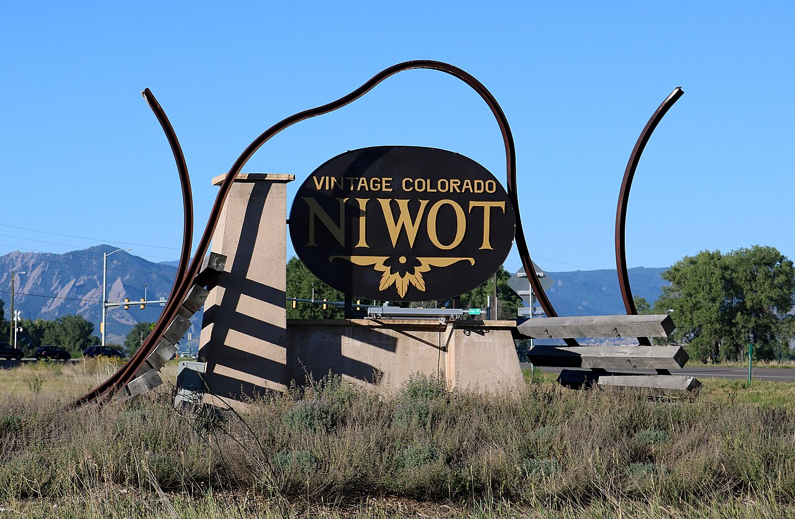

Trails & open space
Walk, ride, and connect.
Niwot Trails connect neighborhood routes with the Longmont-to-Boulder Regional Trail. County trailheads close at sunset, while regional commuter connections remain open around the clock.
Trail map and current information